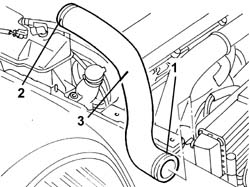

1088D10 LOWER radaitor coolant outlet HOSE - R.R.
- Path
- Procedures > 10 ENGINE > 1088 ENGINE COOLING > 1088D COOLANT HOSES AND PIPES > 1088D10 LOWER radaitor coolant outlet HOSE - R.R.
- Kind
- repair procedure (removal / refitting; the operation number is the code)
- Applies to
- engines: 2.4 JTD 10V; all production periods
- Interactive page
- https://sloeber94.github.io/elrnDB-lThss/en/#/76214
Applies to: all engines; all production periods
 Removing
Removing
 Refitting
RefittingSee in Op. 7055B54 PROTECTION/GUARD under engine - R.R.
- Have a suitable container for collecting the coolant ready.
- Raise the lift.
1. Disconnect the lower radiator pipe.
- Lower the lift.
See in Op. 1016A10
2. Disconnect the lower pipe from the pump rigid inlet pipe.
3. Remove the lower radiator pipe.

Applies to: all engines; all production periods
Refitting
Removing- Fit the lower radiator pipe.
- Connect the lower pipe to the pump rigid inlet pipe.
See in Op. 1016A10
- Raise the lift.
- Connect the lower radiator pipe.
- Lower the lift.
See in Op. 0010T20 Engine REFRIGERANT FLUID - Change
See in Op. 0010T21 ENGINE COOLANT - Check density and top up if necessary
- [0010T21]